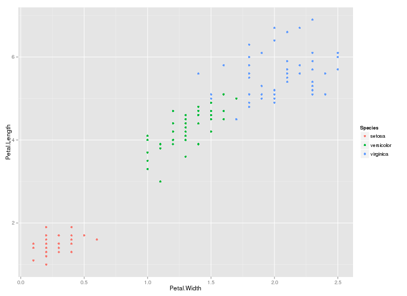

- Edit YAML front matter
- Write using R Markdown
- Use an empty line followed by three dashes to separate slides!
Test slide deck
Testing conversion of io2012 to pdf format with images
Jacqueline Buros
Sample slide 1
Sepal Width and Sepal Length by Species (Iris dataset)

![]()
Petal Width and Sepal Length by Species (Iris dataset)

The end